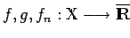
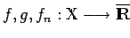
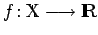
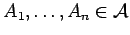
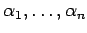
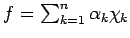
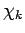

Inhalt Index DeskTop Bronstein

 Funktionalanalysis Maß und Lebesgue-Integral Meßbare Funktionen
Funktionalanalysis Maß und Lebesgue-Integral Meßbare Funktionen


Der Begriff der meßbaren Funktion erfordert kein Maß, sondern eine  -Algebra. Seien
-Algebra. Seien  eine
eine  -Algebra von Teilmengen der Menge
-Algebra von Teilmengen der Menge  und  meßbare Funktionen. Dann sind auch die folgenden Funktionen (s. Vektorverbände) meßbar:
und  meßbare Funktionen. Dann sind auch die folgenden Funktionen (s. Vektorverbände) meßbar:
Eine Funktion  heißt elementar oder simpel, wenn es eine (endliche) Anzahl von paarweise disjunkten Mengen  und reelle Zahlen  gibt, so daß  gilt, wobei  die charakteristische Funktion der Menge Ak bezeichnet. Offenbar ist jede charakteristische Funktion einer meßbaren Menge und somit jede elementare Funktion meßbar. Interessant ist, daß jede meßbare Funktion beliebig genau durch Elementarfunktionen approximiert werden kann: Für jede meßbare Funktion existiert eine monoton wachsende Folge von nichtnegativen Elementarfunktionen, die punktweise zu f konvergiert.